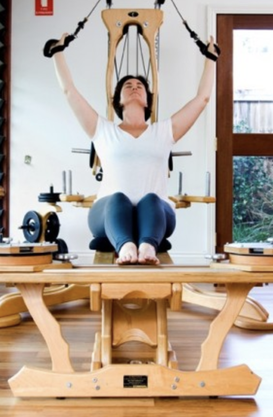
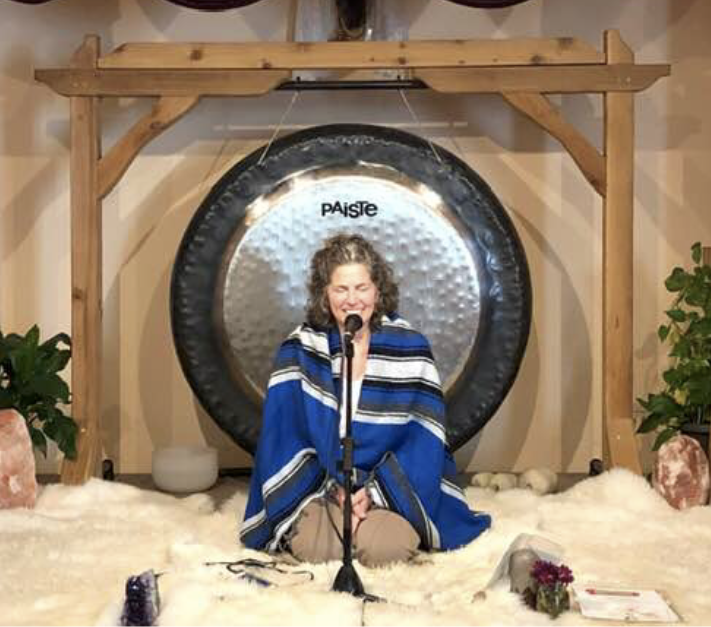
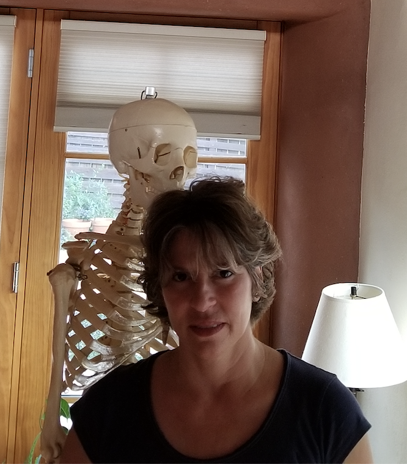

MOVE YOURSELF!
THE BODY IS DESIGNED FOR
MOVEMENT
"The way you use yourself is the way you react with your entire being
in every situation of your life.
In some situations you react well, with efficiency, intelligence and
vitality. In other situations you react less
well. Whether you react well or not, your whole being is present in all of
your reactions. And your body - from head to toe - is inseperable from the
thinking that animates it.
Therefore, what you think affects your body, and what you do with your body,
affects your thinking."
~Eric Franklin
GYROTONIC/GYROKINESIS

trygyro
JUST MOVE A LITTLE
- CLOSE YOUR EYES
- INHALE DEEPLY THROUGH THE NOSE AND ARCH YOUR TORSO
- EXHALE DEEPLY OUT THE MOUTH AND CURL YOUR TORSO
- REPEAT, REPEAT, REPEAT AGAIN
- REACH ARMS ABOVE THE HEAD IN A V SHAPE WHILE ARCHING
- KEEP REACHING AND FEEL YOUR FEET AND PELVIS GROUNDING
- STRETCH, REALLY STRETCH
- REACH ARMS/FINGERS INTO CENTER OF TORSO WHILE CURLING
- OPEN BACK OUT INTO AN X WITH THE BODY
- BREATHE
- REPEAT ENTIRE SEQUENCE
KUNDALINI YOGA

kundaliniyoga
JUST BREATHE A LITTLE
An uplifting blend of spiritual and physical practices,
Kundalini Yoga incorporates movement,
dynamic breathing techniques, meditation, and the chanting of mantras,
such as Sat Nam, meaning "truth is my identity."
The goal is to build physical vitality, awaken spiritual
thoughts and increase consciousness. It increases body
strength, promotes overall physical fitness and aids in
fighting emotional stress by balancing
the endocrine and nervous systems of the body. As the
"yoga of awareness,"
the philosophical purpose of Kundalini is to awaken your
Higher Self.
Each individual, it is believed, is an energy
center
for Brahman (God-like creative consciousness).
THE ALEXANDER TECHNIQUE

headnecknspine
JUST LENGTHEN YOUR SPINE A LITTLE
The Alexander Technique is a way of learning to move mindfully
through life. The Alexander process shines a light on inefficient
habits of movement and patterns of accumulated tension, which
interferes with our innate ability to move easily and according
to how we are designed. It’s a simple yet powerful approach that
offers the opportunity to take charge of one’s own learning and
healing process, because it’s not a series of passive treatments
but an active exploration that changes the way one thinks and
responds in activity. It helps a person discover a new balance in
the body by releasing unnecessary tension. It can be applied to
sitting, lying down, standing, walking, lifting, and other daily
activities.